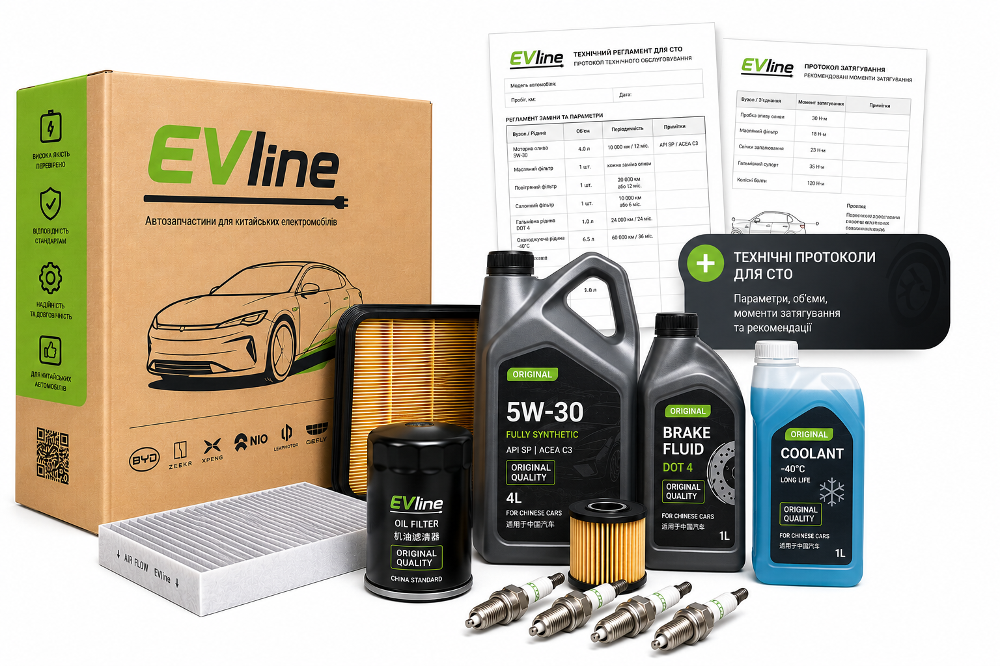
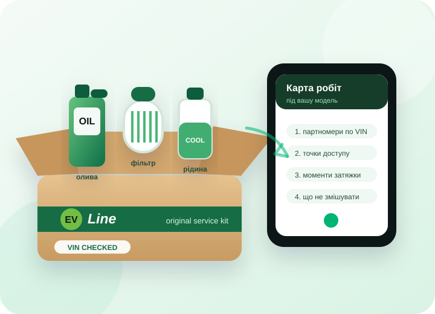
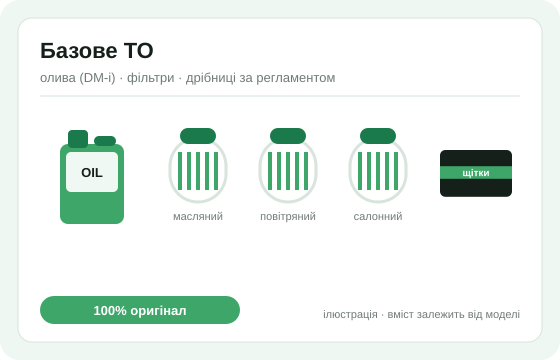
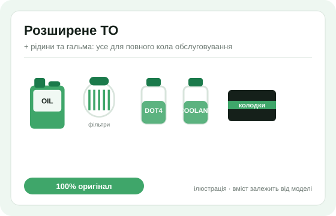
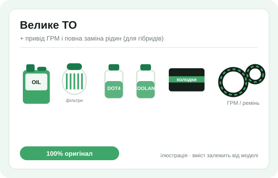

10, 20, 30, 60 тис. км — даємо перелік того, що входить у ТО саме вашої комплектації.
Комплекти ТО з Китаю
Комплект ТО для китайського авто
Оригінальні розхідники, рідини та фільтри з Китаю під вашу модель, пробіг і VIN.
Безкоштовно
додаємо до комплекту ТО
- 1Список компонентів для вашого ТОПідбираємо за VIN, моделлю і пробігом.
- 2Регламент для механікаЩо, де і в якому порядку міняти на СТО.

Що ви отримуєте
Список ТО безкоштовно, карта робіт — безкоштовно з комплектом
Ми знаємо, що потрібно міняти на планових пробігах у сучасних BYD, Zeekr, Li Auto, Denza, Xiaomi та інших китайських авто. По VIN даємо точний перелік, а при замовленні комплекту додаємо робочу карту для вашого сервісу.
Фільтри, оливи, рідини, колодки, редукторне масло, сервісні дрібниці.
При купівлі комплекту даємо детальний регламент для механіка: доступ, порядок, моменти затяжки.
Терміново — авіа. Планово — море, щоб не переплачувати за доставку.

Безкоштовно з комплектом
Як виглядає регламент для вашого механіка
Це робоча карта під конкретну модель і процедуру: на основі заводських даних виробника, але у форматі, з яким зручно працювати на СТО.

Безкоштовно При замовленні комплекту ТО ми додаємо детальний регламент для механіка: не просто список деталей, а порядок виконання робіт.
Оригінальні позиції під ваш VIN, без підбору “на око”.
Що зняти, що перевірити і в якій послідовності збирати назад.
Щоб не перетягнути алюміній, підрамник, захист або корпус фільтра.
Що не чіпати, де сервісний режим, які рідини не змішувати.
Тут буде приклад регламенту у PDF, щоб клієнт міг подивитися формат перед замовленням.
Технологічні карти EVLine призначені для кваліфікованих механіків і не замінюють вимог безпеки виробника.
Проблема
Чому звичайне СТО може помилитися навіть на простому ТО
Механік може бути хорошим, але без карти конкретної моделі він часто діє “по досвіду” зі звичайними авто.
Немає карти доступу
Де знімати захист, які кліпси не ламати, які точки підйому не чіпати — це не завжди очевидно.
Регламент закритий
Дилерські мануали не лежать у вільному доступі, тому сервіс часто працює “на дотик”.
Рідини плутають
Для батареї, кондиціонера і редуктора важливий точний тип рідини, а не загальна сумісність.
ТО дорожчає на місці
Локальні продавці продають дефіцит і терміновість. Морем з Китаю це можна планувати дешевше.
Комплекти
Три сценарії ТО — від фільтрів до великого регламенту
Не продаємо “універсальний набір”. Склад залежить від моделі, пробігу, типу приводу і того, що вже робили раніше.

Регламентне ТО від $80
Коли потрібні фільтри, олива для DM-i і базова перевірка. Добре підходить для планового обслуговування без складних робіт.
- олива + масляний фільтр (DM-i)
- повітряний фільтр
- салонний фільтр
- Безкоштовно технологічна карта робіт

Повне ТО EV/PHEV від $180
Коли треба вже не “поміняти фільтр”, а пройти вузли, які у звичайному сервісі часто не помічають: редуктор, гальма, охолодження, колодки.
- усе з Базового
- гальмівна рідина (раз на 2 роки)
- олива редуктора + фільтр
- діелектрична охолоджуюча рідина
- колодки за потреби
- Безкоштовно технологічна карта робіт

Великий регламент від $450
Для гібридів з пробігом і складніших процедур: привід ГРМ, свічки, помпа, повна заміна рідин, розширена карта доступу.
- усе з Розширеного
- комплект приводу ГРМ (для DM-i, за регламентом)
- свічки запалювання
- помпа / ролики за станом
- повна заміна рідин
- Безкоштовно розширена технологічна карта
Ціни орієнтовні — точний склад і вартість підтверджує менеджер після перевірки VIN.
Приклади запитів
З чим до нас уже логічно звертатися
Точний регламент підтверджуємо по VIN, але ось типові задачі, які власники сучасних китайських авто можуть закривати комплектом заздалегідь.
Планове ТО EV або DM-i
Фільтри, олива ДВЗ для DM-i, гальмівна рідина, рідини охолодження, редукторне масло.
Карта безкоштовно: сервісний режим, рідини, моментиEV-обслуговування без дилера
Салонні фільтри, гальма, редуктор, 12V акумулятор, охолоджуючий контур батареї.
Карта безкоштовно: точки підйому і доступуГібрид з генератором
Олива, фільтри, свічки, охолодження, гальмівна система, великий регламент за пробігом.
Карта безкоштовно: що міняти за пробігомНові моделі без локального досвіду
Коли в Україні ще немає звичної бази по ТО, ми підбираємо комплект і схему з китайських джерел.
Карта безкоштовно: без експериментів на авто
Неочевидні помилки
8 нюансів, які звичайне ТО часто не бачить
Це саме ті місця, де “поставимо щось схоже” або “зробимо як на звичайному авто” можуть обійтися дорожче самого ТО.
⚡У контур батареї не можна лити “звичайний” антифриздетальніше ↓
Для батареї і силової електроніки потрібна низькопровідна/діелектрична охолоджуюча рідина. Якщо залити універсальний антифриз або змішати типи, можна отримати корозію, помилки ізоляції і перегрів.
🅿️Задні колодки не можна міняти без сервісного режимудетальніше ↓
На авто з електронним ручником перед заміною колодок потрібен сервісний режим EPB через діагностику. Якщо механік просто втисне поршень — зламає електропривод супорта. Так «економна» заміна колодок закінчується покупкою супорта.
⛽У PHEV олива старіє, навіть коли двигун працює малодетальніше ↓
Короткі цикли ДВЗ і холодні запуски прискорюють старіння оливи та можуть давати розрідження паливом. Тому важливі час, умови їзди і правильна специфікація, а не тільки цифра пробігу.
🧪У вашому авто можуть бути різні контури охолодженнядетальніше ↓
У PHEV/EV контур ДВЗ, батареї та силової електроніки можуть мати різні вимоги. На карті робіт ми розводимо ці контури окремо, щоб сервіс не “долив універсальний” не туди.
🛑Колодки цілі — не означає, що гальма справнідетальніше ↓
Через рекуперацію гальма «сплять»: рідина роками вбирає вологу, направляючі закисають. Якщо пропустити: клин супорта і «ватне» гальмо в найгірший момент. Вологість рідини міряється тестером за хвилину.
❄️Одна заправка кондиціонера може вбити компресордетальніше ↓
Електрокомпресор вимагає діелектричної оливи. Звичайна СТО заллє універсальну — провідну. Якщо пропустити: компресор під заміну, а там, де кондиціонер охолоджує батарею — ще й перегрів батареї влітку.
🔋12V акумулятор може зупинити весь електромобільдетальніше ↓
Навіть у великого EV малий 12V акумулятор запускає електроніку, замки і блоки керування. У карті ми виносимо перевірку 12V та симптоми, які варто побачити до того, як авто “засне”.
⚙️Єдина «передача» теж має витратникдетальніше ↓
Олива редуктора працює під ударним моментом електромотора з першого метра. Заміна за регламентом — недорога. Якщо пропустити: гул і ремонт редуктора, який коштує як десять ТО.
Усі ці перевірки і застереження ми переносимо в карту робіт, яку додаємо до комплекту безкоштовно. Надішліть VIN — покажемо, які нюанси є саме у вашому авто.
Економія
ТО можна планувати — тому на ньому можна економити
Запчастину після ДТП часто треба терміново. ТО — інша історія: пробіг, дата і регламент відомі заздалегідь. Саме тут море з Китаю дає найбільший сенс.
Море замість авіа
Якщо до ТО ще 1,5-2 місяці, комплект їде морем. Ви не платите за терміновість, яка вам не потрібна.
Без локальної націнки
Купуєте через нас у Китаї, а не з української полиці, де в ціну вже закладені дефіцит і ризик продавця.
Оригінал, а не “підійде”
Для EV/PHEV рідини і специфікації важливіші, ніж здається. Ми підбираємо саме те, що передбачено для моделі.
Авіа від 14 днів. Дорожче, але рятує, коли ТО вже на носі або авто стоїть.
Море від 60 днів. Найкращий варіант для наступного ТО, яке ви бачите по пробігу.
Ми можемо порахувати обидва сценарії: “скільки коштує зараз” і “скільки коштує, якщо замовити завчасно”.
Процес
Як це працює
Надсилаєте VIN
І пробіг. Менеджер визначає, яке ТО за регламентом і що входить.
Отримуєте список і дві ціни
Терміново авіа або заздалегідь морем — з конкретною різницею в грошах.
Ми перевіряємо комплект у Китаї
Оригінальні позиції, фото перед відправкою, без заміни на “аналог” без погодження.
СТО працює по карті
Віддаєте механіку комплект і карту, яку ми додаємо безкоштовно. Далі можемо нагадати, коли наближатиметься наступне ТО.
FAQ
Питання про комплекти ТО
Моє СТО ніколи не бачило BYD. Точно впорається?
Для робіт рівня ТО — так: карта описує процедуру до рівня «який ключ, де відкрутити і з яким моментом затягнути». Це не заміна кваліфікації, але хороший механік отримує чіткий маршрут без експериментів.
А високовольтні роботи?
Високовольтні процедури ми не віддаємо звичайному СТО. Карта ТО стосується регламентних робіт, рідин, фільтрів, колодок, редуктора і перевірок без втручання у ВВ-контур.
Чи можна купити карту окремо, без комплекту?
Ні, карта входить у комплект безкоштовно — це частина нашої послуги, а не окремий товар. Кожен примірник маркується номером замовлення.
Скільки реально економлю морем?
Залежить від ваги. Орієнтир: доставка 10-кілограмового комплекту авіа — близько $155, морем — від $56, а від 30 кг тарифи ще нижчі. Плюс самі розхідники дешевші, ніж у локальних продавців.
Звідки впевненість, що все оригінал?
Купуємо у офіційних дилерів у Китаї, перевіряємо і фотографуємо кожну позицію перед відправкою — фотозвіт ви отримуєте до того, як комплект поїде.
Чи можна замовити лише частину комплекту?
Так. Якщо вам потрібна тільки охолоджуюча рідина, редукторне масло, колодки або комплект фільтрів — порахуємо окремо, але карту робіт підготуємо саме під замовлену процедуру.
evlineukraine@gmail.com
м. Київ, Оболонська набережна, 3, офіс 1
EVLine Ukraine